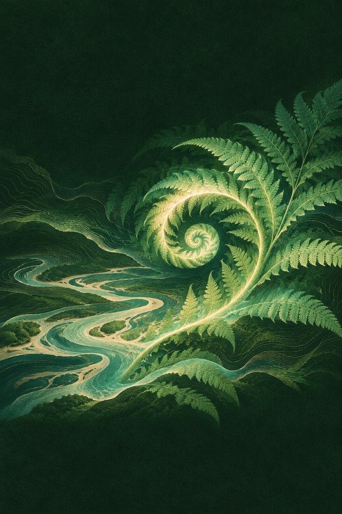

Mutable Dreams presents
Music for
Streams Radio
Slow chords, hand percussion and shifting Biomes. An ambient station by Kid Bunka.

Listen any time
The browser player creates a fresh generative session on your device. Press Play radio to start. Keep the player open for continuous listening.
Listen together
On-air sessions appear on Kid Bunka’s YouTube channel. Hear the four-hour session.
A standalone public MP3 feed for internet-radio receivers is pending.